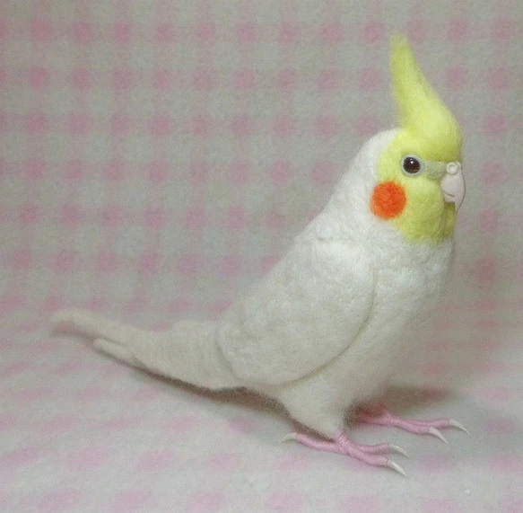

雞尾鸚鵡
鸚鵡介紹
雞尾鸚鵡（學名：Nymphicus hollandicus），鳳頭鸚鵡科雞尾鸚鵡屬的一種鳥類，也稱作玄鳳鸚鵡。因日本於明治後期（約1910年）引進，因此在台灣又名；歐卡妹（「オカメインコ」的音譯，日名源自此鳥臉頰橙紅斑點很像阿龜面具（Okame）），似乎有誤稱或再簡化為卡妹（カメイ龜井Kamei）的趨勢，是澳洲特有的鳳頭鸚鵡，是最常見的寵物鳥。
雞尾鸚鵡（Nymphcushollandicus）英文俗名Cockatiel。雞尾鸚鵡原棲息於澳州內陸，約在一、兩百年前被英國人帶回去當作寵物飼養而開始流行起來，學名「Nymphcus hollandicus」的由來是1832年德國的Johann eorg agler看到棲息在澳洲的雞尾鸚鵡時，見牠們十分可愛而以虛構的寧芙（精靈）命名（Nymphcus意即「小精靈」），種名hollandicus則是New Holland新荷蘭（古時對澳洲的稱呼）之意。1845年，荷蘭人在初次見到雞尾鸚鵡時以葡萄牙語的cacatitho（小鳳頭鸚鵡）稱呼牠，以後則演變為英文的Cockatiel。
